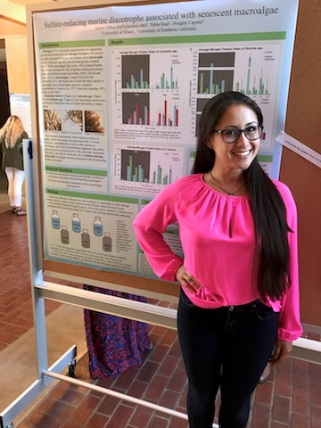
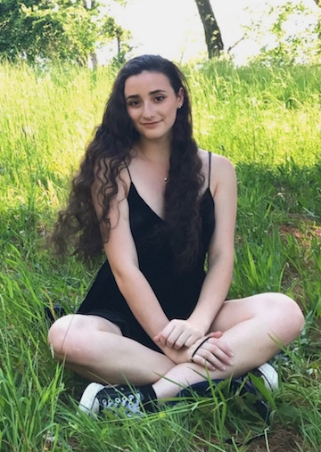

Créditos
Trent D'Alessio
Colaborador en la edición de las cartas y Redactor.
“El proyecto me ha hecho dar cuenta del valor de la codificación y la programación, además de una nueva comprensión de la vida de Federico García Lorca.”
Gabriela Díaz
Colaboradora en la edición de cartas
"De este curso me quedo sobretodo con dos cosas: una duda "¿Debemos subirlo a GitHub", y un descubrimiento "El poder de los metadatos"

Taylor Dillon
Creación de la cronología. Diseño del banner.
Taylor Dillon
Creación de la cronología. Diseño del banner.
“Antes de este clase, nunca había considerado la multitud de maneras en las que se puede contar una historia a través de las tecnologías web.”
Philippe M. Garofild-Oprescu
Investigación, dirección e imágenes. Creación del Story Map.
Diseño HTML&CSS.
"Disfruté mucho con el proyecto final, porque ahí pude trabajar en los aspectos que más me gustaba."
Mayda Herrera
Coordinadora de la edición de cartas y postales. Redactora y correctora general.
"Esta clase me ha traído muchas satisfacciones y conocimientos nuevos y el descubrimiento de este mundo mágico, antes desconocido para mí, de las humanidades digitales."
Ben Jennings
Creación de la cronología
"Nunca pensé que aprendería HTML, y ahora puedo incluso que lo aprendí en español"

Jillian Poles
Encargada de la galería, organizando el código para las dieciocho imágenes de la Richter Library. Colaboradora del Storymap, añadiendo eventos en el spreadsheet.